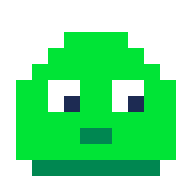
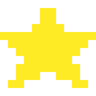

試試看：像素畫板
先選一個顏色，再點格子上色，也可以按住滑鼠左鍵拖曳連續畫。 沒有靈感的話，先按「產生新配色」，看到喜歡的色碼再用下方的顏色選擇器選取。 換尺寸會清掉目前的畫面。
作品展示
下面是用 12×12 畫的小圖，放大後每一格都看得很清楚。



先選一個顏色，再點格子上色，也可以按住滑鼠左鍵拖曳連續畫。 沒有靈感的話，先按「產生新配色」，看到喜歡的色碼再用下方的顏色選擇器選取。 換尺寸會清掉目前的畫面。
下面是用 12×12 畫的小圖，放大後每一格都看得很清楚。

